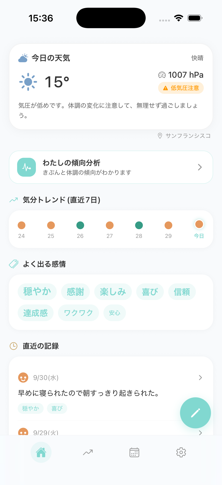
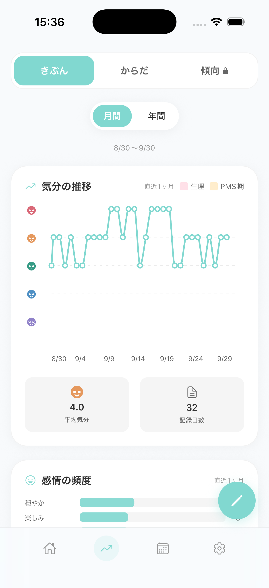
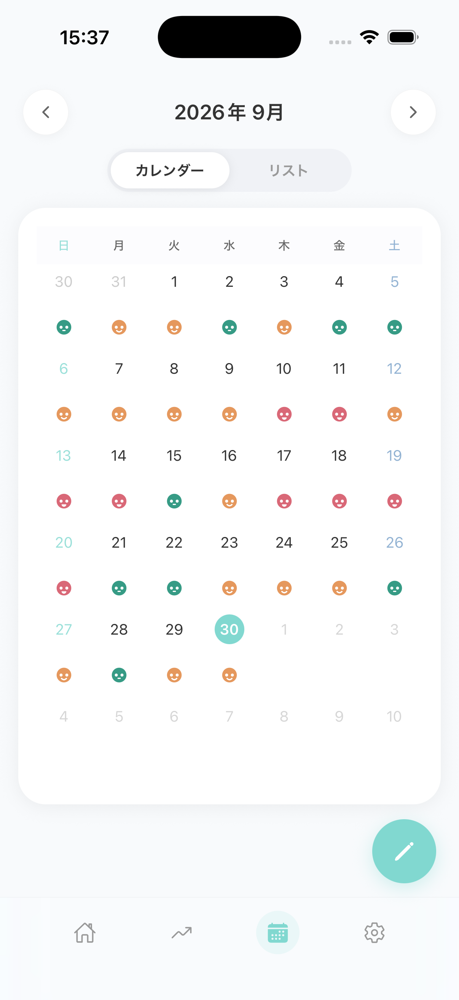
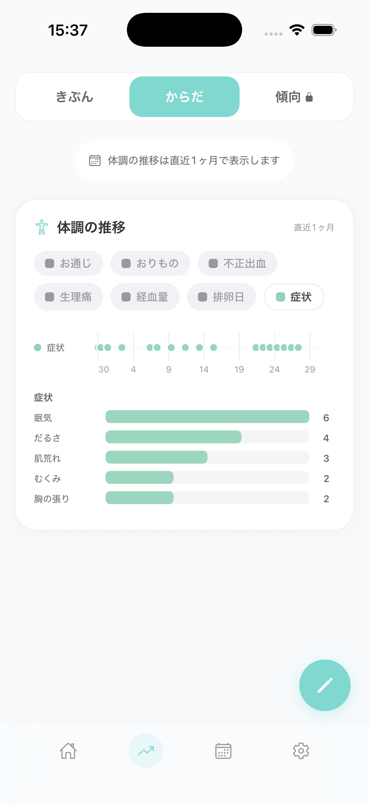

気分も、体調も、
生理周期も。
Mely（メリー）は、数タップで気分と体調を残せる日記アプリです。生理日や気圧・天気も一緒に振り返り、自分の調子を知る手がかりにできます。

「最近、なんとなく調子が悪い」
「生理前になると、気分が落ち込みやすい気がする」
「前に元気だったのは、いつだろう」
そのとき覚えていても、あとから思い出すのは難しいもの。そんなとき、記憶に頼らずに自分の記録を振り返れるように。
長い文章は必要ありません。今の気分と、当てはまる感情・体調のタグを選ぶだけ。忙しい日も、書く気力が起きない日も、そのときの状態をサッと残せます。
01RECORD
気分と体調を
数タップで記録
気分を選び、感情や体調のタグをタップするだけ。メモを残したい時は、ひとこと日記も添えられます。
02GRAPH
グラフで最近の
自分を振り返る
気分や体調の推移、よく記録している感情を確認できます。不調が続いている時期だけでなく、調子がよくなってきた変化も振り返れます。

03CALENDAR
カレンダーで
今月の調子をひと目で
その日の気分を表すアイコンが並び、ひと月の様子を見渡せます。気になる日をタップすると、日記や気圧・天気を確認できます。

04CONDITION
体調の傾向も
カテゴリごとに
頭痛や眠気、むくみといった症状は、カテゴリごとの内訳で振り返れます。生理の開始・終了も簡単に記録でき、気分や体調の変化と照らし合わせて自分のパターンを確認できます。

05WEATHER
気圧・天気は
自動で記録
記録時の気圧や天気を自動で取得。自分で調べたり入力したりせず、その日の状態と一緒に残せます。
06AI
記録をもとに
AIからひとこと
直近の記録をもとに、AIが一言アドバイスを届けてくれます。最近の自分を振り返り、今日の過ごし方を考えるきっかけに。
FREEずっと無料
記録は全部無料です
ここまでの機能はすべて無料で、アカウントを作らなくても使えます。広告も入れていません。機種変更のときにデータを引き継ぎたい場合だけ、アカウント登録が必要になります。
MAKER開発者のこだわり
日記が続かなかった開発者自身の思い
Melyを作っている私自身が、日記が続かないタイプです。なので、入力の摩擦を減らすことを何より優先しました。気分を選んでタグをタップすれば記録は終わり。文章を書かなくても記録しやすい設計となっています。
もうひとつは、記録したものがすぐ反応として返ってくることです。グラフやAIのひとことで、今の自分の状態や傾向がすぐに分かるよう設計しています。
課金機能である買い切りの傾向分析パックは、これまでの傾向から7日先の予報を出して、見通しを立てられるようにしました。「今週の後半はしんどくなりそうだから、予定を軽くしておこう」というように、見通しを立てる判断材料になります。
WHY考え方
買い切りにした理由
Melyの有料機能は、一度きりの買い切りです。月額や年額の課金はありません。
気分や体調の記録は、調子が悪いときほど入力する元気がなくなります。（めんどくさくなりますよね。）何日も、ときには何週間も開かない時期があるのは自然なことで、その間の支払いを気にしたり、後ろめたさを感じたりしてほしくありませんでした。買い切りなら、支払いはその一度で終わります。
記録自体は無料でおつかいただけます。傾向分析パックが必要になったときだけ、一度の支払いで追加できます。
PACKわたしの傾向分析パック
傾向分析パックについて
7日間の体調予報やしんどくなりやすい時と上向く時の傾向を「取扱説明書」にまとめる機能があります。また、生理についても、今回の周期がいつもの周期とどう違ったかを知る判断材料になります。
記録が増えるほど、傾向がわかりやすくなります。
わたしの傾向分析パック
800円（税込）・買い切り
今日の気分をサッと入力。
※Melyは日々の記録と振り返りを支援するアプリです。不調の原因を特定したり、診断・治療を行ったりするものではありません。